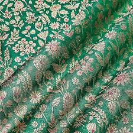

Chikankari

History:Originated in Lucknow, Uttar Pradesh, during the Mughal period, believed to be introduced by Empress Noor Jahan. It evolved as a delicate form of embroidery representing elegance and finesse.
Weaving Methods:Hand embroidery done on fabrics like muslin, cotton, silk Uses stitches like bakhiya (shadow work), phanda, keel kangan, etc. Patterns are first block-printed, then hand-embroidered by artisans
Name: Lucknow Chikan Craft GI Tag Number: 107 Registered: 2008
Banaras
History: Originating from Varanasi (Banaras), these textiles date back to the Mughal era, known for their intricate brocade work using gold and silver threads. They flourished under royal patronage and became a symbol of opulence.
Weaving Methods:Brocade weaving using the Jacquard loom Zari (gold/silver thread) incorporated into silk base Patterns are woven, not embroidered, requiring high craftsmanship and often weeks or months of work
NameName: Banaras Brocades and Sarees GI Tag Number: 126 Registered: 2009